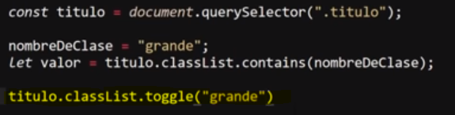
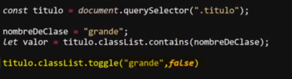

Este metodo se puede considerar como la mescla de "add()" y de "remove", ya que este puede tanto añadir como eliminar una clase de un elemento, mas espesificamente por defecto, este metodo determina el si el elemento posee la clase defnida, de poseerla este la elimina, y si se da el caso que no la posea la añade.
Ejmeplo

Est a propiedad tambien cuenta con un segundo valor opcional, el cual se usa para forzar la clase, se trata de un valor booleano, el cual en el caso de ser "true" el metodo siempre añadira la clase, si el elemento no la posee, y no la eleminara si esta ya es poseida por el elemento, por otro lado en el caso de definirse como "false" el metodo simpre que la encuentre eliminara la clase, y esta no sera añadida por este.

En este ejmeplo se aplico la propiedad "toggle" al elemento seleccionado, con los valores de "grande y "false", por lo que si el elemento posee la clase "grande" esta sera elimiada.
Nota: Este metodo no solo modifica los valores del atributo "class", si no que a su vez tambien retorna valores booleanos, al igual que lo hace el metodo "contains", por lo tanto cuando el metodo añade la clase retorna "true" y cuando la elimina retorna "false".